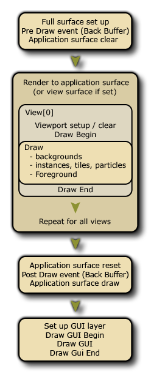

Das Draw-Ereignis bestimmt, was auf dem Bildschirm angezeigt wird, wenn Sie Ihr Spiel ausführen, und es wird in verschiedene separate Unter-Events aufgeteilt, um die verschiedenen Zeichenanforderungen für Ihr Spiel besser zu erfüllen. Das folgende Bild zeigt die Reihenfolge, in der jedes Ereignis ausgeführt wird:  Das normale Draw- Ereignis wird in drei Unterereignistypen unterteilt: Die Draw Begin-, die Standard Draw- und die Draw End- Ereignisse. Im Allgemeinen müssen Sie nur das Standard- Draw -Unterereignis verwenden und Sie sollten wissen, dass bei allen Instanzen in einem Raum dieses Ereignis in jedem Schritt des Spiels ausgelöst wird. Daher wird dieses Unterereignis immer so lange aufgerufen, wie das instance hat das visible- Flag auf true gesetzt. Selbst wenn Sie in den Objekteigenschaften nichts für dieses Unterereignis definiert haben (dh: keinen Code oder Aktionen), hat das Objekt, wenn ihm ein Sprite zugewiesen wurde, immer noch ein Zeichen-Unterereignis, das ausgelöst wird. Dies liegt daran, dass GameMaker Studio 2 zwei Möglichkeiten zum Zeichnen von Objekten im Unterereignis Draw bietet: Anwendung
- die Standardzeichnung, dh wenn Sie das Sprite in den Objekteigenschaften definieren und keine Aktionen oder Code im normalen Unterereignis Draw platzieren, wird GameMaker Studio 2 dieses Sprite zeichnen. Beachten Sie, dass alle Transformationen, die Sie in anderen Ereignissen durchführen, um die Bildskalierung, den Index, die Überblendung usw. zu ändern, ebenfalls berücksichtigt werden, solange das Zeichenereignis leer ist.
- die benutzerdefinierte Zeichnung, bei der Sie Code oder Aktionen in das Zeichenereignis einfügen. Dies sagt GameMaker Studio 2 "Ich möchte steuern, was Sie für Instanzen dieses Objekts zeichnen" und es überschreibt vollständig die Standardzeichnung. Dies bedeutet, dass Sie beispielsweise ein Objekt mit einem Sprite zuweisen können, und legen Sie dann das Zeichenereignis fest, um Text zu zeichnen, und das Sprite wird nicht gezeichnet, da Sie GameMaker Studio 2 nicht angewiesen haben, es mit dem Text zu zeichnen.
Die restlichen Ereignisse werden in den folgenden Abschnitten erläutert:
Neben dem Haupt- Draw- Sub-Event gibt es auch ein Draw-Begin- und ein Draw-End- Sub-Event. Sie verhalten sich genauso wie ein Standard- Draw -Unterereignis (dh sie zeichnen alles, was Sie in jeden Schritt des Spiels und für alle Ansichten einfügen), aber sie "zeichnen" nichts, wenn sie einem Objekt nicht hinzugefügt werden. und sie werden immer vor / nach dem Standard Draw- Sub-Event laufen. Sie würden also den Schritt Zeichnen beginnen für alle Instanzen, dann das Zeichnen für alle Instanzen und schließlich den Schritt Zeichnen Ende für alle Instanzen ausführen.
Auf diese Weise können Sie im Schritt "Zeichnen beginnen" in einer Instanz Objekte zeichnen oder Zeicheneigenschaften festlegen und sicherstellen, dass alle Instanzen mit einem Standard-Draw-Ereignis oder Draw-Ende-Ereignis diese Eigenschaften verwenden oder zeichnen, was die erste Instanz gezeichnet hat. Im Grunde genommen ist es ein sicherer Weg, um zu garantieren, dass bestimmte Dinge zu bestimmten Zeiten gezeichnet werden, ähnlich wie bei den Ereignissen Begin Step und End Step.
Beim Zeichnen von GameMaker in GameMaker Studio 2 müssen Sie beachten, ob es sich um ein Sprite, das Sie zeichnen, oder einen Shader oder 3D handelt:
- Das Zieh-Ereignis ist ein sehr intensives Ereignis, da es eines der Ereignisse ist, die die meiste Zeit und Ressourcen beanspruchen... zu diesem Zweck ist es nie eine gute Idee, etwas in dem Zeichen-Ereignis außer Zeichnen zu tun. Speichern Sie also Ihren großen Code oder komplexe Aktionen für das Step-Ereignis oder die Alarme oder was auch immer für ein anderes Event passt, aber lassen Sie das Zeichenereignis für die Zeichnung frei, da dies das Beste ist.
- Wenn für Ihr Objekt der Parameter visible auf off festgelegt wurde (sodass die Instanzen des Objekts nicht gezeichnet werden), werden alle Zeichenereignisse übersprungen (mit Ausnahme des Ereignisses Resize ). Das bedeutet, dass das Unsichtbarmachen einer Instanz dazu führt, dass der gesamte Code, der in einem dieser Ereignisse platziert wird, nicht mehr ausgeführt wird. Geben Sie also keinen essentiellen Code in die Zeichenereignisse ein, wenn sie nicht sichtbar sind.
- Was Sie zeichnen, hat nichts mit der von Ihnen gewählten Kollisionsmethode (traditionell oder Physik) zu tun, die durch die Objekteigenschaften und das Sprite (oder die Maske) definiert wird, die das Objekt erhalten hat.
Der Unterereignis -Typ " Draw Gui" fällt unter die Kategorie " Draw-Ereignis " und wurde speziell zum Zeichnen von GUI-Elementen (Graphical User Interface) entwickelt, die nicht von der Ansichtsskalierung oder -rotation betroffen sind. Dies bedeutet, dass Sie eine Instanz alle Elemente für Ihr HUD zeichnen lassen können, ohne die gesamte Positionierung der Elemente auf der Instanzposition innerhalb des Raums oder der Position der aktuellen Ansicht basieren zu müssen.
Beim Zeichnen dieses Ereignisses ist es wichtig, dass Sie verstehen, dass sich die Zeichenkoordinaten nicht ändern, selbst wenn Ansichten aktiv sind und (0,0) immer die obere linke Ecke der Anwendungsoberfläche oder der Anzeige ist (siehe die Anmerkung im unten in diesem Abschnitt), und die Standardbreite und -höhe sind 1: 1 mit der Anwendungsoberfläche. Die Tiefenordnung wird immer noch zwischen verschiedenen Instanzen auf verschiedenen Layern (so dass eine Instanz auf einer unteren Ebene unter einer auf einer höheren Ebene gezeichnet wird) und auch innerhalb der Events selbst aufrechterhalten, da das Draw GUI Begin -Unterereignis zuerst für alle Instanzen zeichnet. dann zeichnet die Standard- Draw-GUI für alle Instanzen darüber und schließlich wird das Sub-Ereignis Draw Gui End ausgelöst.
Auf diese Weise können Sie in der Draw GUI Begin in einer Instanz zeichnen oder Zeichnungseigenschaften festlegen und sicherstellen, dass alle Instanzen mit einem Standard- Draw-GUI oder Draw GUI End -Unterereignissen diese Eigenschaften verwenden oder über die erste Instanz zeichnen gezeichnet. Grundsätzlich ist es ein sicherer Weg, um zu gewährleisten, dass bestimmte Dinge zu bestimmten Zeiten gezeichnet werden, ähnlich wie bei den Unterereignissen "Begin Step" und " End Step".
Diese Ereignisse können auch in Verbindung mit den normalen Draw -Unterereignissen verwendet werden (die von der Ansichtsposition, Skalierung und Rotation wie üblich beeinflusst werden). Wenn Sie kein Draw-Ereignis haben, aber ein Draw-GUI-Ereignis haben, zeichnet GameMaker Studio 2 weiterhin standardmäßig das Sprite für die Instanz (falls vorhanden).
In Bezug auf die anderen Draw-Unterereignisse zeichnen die Draw-GUI- Ereignisse immer über alles, was in den normalen Zeichenereignissen gezeichnet wird. Wenn Sie also eine Instanz auf einer niedrigeren Ebene mit einem Draw-GUI- Ereignis haben, wird diese über die Instanz auf einer höheren Ebene mit einem regulären Zeichenereignis gezeichnet. Wenn beide Instanzen ein Draw GUI -Unterereignis haben, wird die Reihenfolge der Ebenen respektiert.HINWEIS: Dieses Ereignis wird standardmäßig 1: 1 mit der Größe der Anwendungsoberfläche gezeichnet, die normalerweise die Größe des Raums oder des Ansichtsanschlusses ist. Das heißt, wenn Sie die Seitenverhältniskorrektur in den Spieloptionen aktiviert haben, wird die GUI nicht über die schwarzen Balken gezogen, die das Spiel "Letterbox" darstellen. Dieses Verhalten kann mit der Taste ausgeschaltet werden display_set_gui_maximise Funktion, und Sie können das GUI-Ereignis auch auf eine bestimmte Größe festlegen, die dann mithilfe der Funktion automatisch an die Größe der Anzeige- oder Anwendungsoberfläche angepasst wird display_set_gui_size.
Die Sub-Events Pre Draw und Post Draw sind Teil der Draw Event- Kategorie. Im Gegensatz zu den anderen Draw-Ereignissen werden diese jedoch direkt in den Bildschirmpuffer gezeichnet. Dies ist die Größe des kombinierten Bildschirmbereichs für alle derzeit sichtbaren Ansichten oder die Fenstergröße, wenn nur eine Ansicht oder keine verwendet wird. Das Bild unten veranschaulicht dies:Wenn Sie also die Pre- oder Post- Drawereignisse verwenden, werden Sie zum Vollbild-Renderziel, das die gleiche Größe wie das Fenster hat, in das alle Ansichten passen. Wenn keine Ansichten aktiv sind, wird stattdessen die Größe des Fensters selbst festgelegt.
Das Pre Draw -Unterereignis wird vor jedem anderen Zeichenereignis ausgelöst, und darin können Sie Werte festlegen, Zeicheneigenschaften festlegen und sogar Dinge zeichnen, ohne sich um die Ansichten oder die Größe der GUI-Ebene kümmern zu müssen (die Größe der GUI-Ebene kann gleich sein) als Bildschirmpuffer, aber möglicherweise nicht, da Sie die GUI-Auflösung im Code einstellen können).
Es ist erwähnenswert, dass dieses Ereignis eintritt, bevor der Bildschirmpuffer gelöscht wird, was bedeutet, dass, wenn Sie die Ansichtslöschung im Raumeditor nicht ausschalten, nichts im Pre-Draw- Ereignis gezeichnet wird, da die erste Ansicht es löscht. Wenn Sie in der Lage sein möchten, die Ansichten selbst zu sehen, oder gar keine Ansichten, dann sollten Sie auch die Hintergrundfarbe im Raum-Editor auf Alpha 0 setzen.HINWEIS: Wenn Sie diese Optionen ausschalten, können Sie bemerken, dass unerwünschte Artefakte auf dem Bildschirm angezeigt werden, wenn das Spiel getestet wird (wie "Spuren" von Instanzen). Dies liegt daran, dass Sie direkt über das vorherige Bild des Zeichenpuffers zeichnen, ohne dass es gelöscht wird. Sie können jedoch verwenden draw_clear_alpha um das selbst zu tun.
Das Post-Draw -Unterereignis wird nach den Standard-Zeichenereignissen, aber vor den Draw-GUI-Ereignissen ausgelöst. Wie das Pre Draw-Ereignis basiert es auf der Größe der Bildschirmpuffergröße und wird vor den Draw-GUI-Ereignissen platziert, damit Sie Post-Processing-Effekte und andere Dinge auf einer Vollbild-Basis einfach und problemlos durchführen können HUD / GUI-Elemente, die Sie in Ihrem Spiel haben können.
Dieser Ereignistyp fällt unter die Kategorie "Ereignis zeichnen ". Obwohl er tatsächlich nicht gezeichnet wird, reagiert er auf Änderungen in der Zeichenfläche. Insbesondere ist er so konzipiert, dass er auf die Änderung in der Größe der Windows 8 /10-Zeichenfläche reagiert Spielfenster ist "geschnappt".
Auf der Windows 8 Zielplattform ist es wichtig, dass Sie die Größe der Spielfläche aus dem "Fangen" des Spielfensters ableiten (wenn der Benutzer beispielsweise das Fenster an die Seite des Bildschirms zieht). Dieses Ereignis löst genau das aus und wird jedes Mal ausgelöst, wenn die Arbeitsfläche geändert wird. Sie können hier benutzerdefinierten Code hinzufügen, der die Größe der Ansicht ändert oder die HUD-Elemente bei Bedarf neu positioniert. Diese Funktion wird bereitgestellt, um zu vermeiden, dass Schritt-Ereignis-Code die ganze Zeit auf diese Dinge prüft.HINWEIS: Sie können dieses Ereignis nicht zeichnen! Es wird ausgelöst, indem die Größe der Zeichenfläche geändert wird, und dient nur dazu, diese Änderung einzufangen. Jede Zeichnung, die noch ausgeführt werden soll, muss sich in einem der anderen Zeichenereignisse befinden.